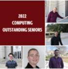

Department of Computer Science and Engineering
Faculty and students in the Department of Computer Science and Engineering are advancing
the theories, principles and applications of computing to design computers, software,
networks and processes. Our academic programs provide a foundation in one of the fastest growing fields in the world, and the faculty members
engaged in research at USC ensure that we remain at the forefront of computing.
Department Highlights
Research Spotlight: Research intends to develop a shift in testing and debugging for
modern machine learning systems
Optimal software performance is essential for modern systems, but for developers,
configuring these components can be challenging. One CEC professor is currently working
on a different method for testing and fixing complex, highly configurable machine
learning systems.
Faculty Spotlight: Preparing for the next generation of wireless networks
Assistant Professor Sanjib Sur recently received a five-year, National Science Foundation
CAREER Award for his research on developing sensing and imaging applications for real
world devices on future and advanced wireless networks.

Undergraduate Student Spotlight: Computing Outstanding Seniors
will host the annual Awards Day ceremony to honor student excellence. Recipients
in computing programs reflect on their time at the CEC and being honored as an Outstanding
Senior.
Graduate Student Spotlight: AI aims to improve telehealth
The COVID-19 pandemic created challenges to the quality of care not only by increasing
the number of patients needing mental health treatment, but also by moving many appointments
and communications from in-person to telehealth.
Alumni Spotlight: Computer Science Alumna creates one of TIME's "Best Inventions of
2020"
Laura Boccanfuso, a computer science doctoral grad, founded Van Robotics. Now, their tutoring
robot ABii was just named one of the Top 100 Inventions of 2020 by TIME Magazine.
Computer Science and Engineering
2020 At A Glance
921
Undergraduate Students
168
Graduate Students
Engineering a Brighter Future
Give to Computer Science and Engineering
Support the students and research in the Department of Computer Science and Engineering by making your gift today.